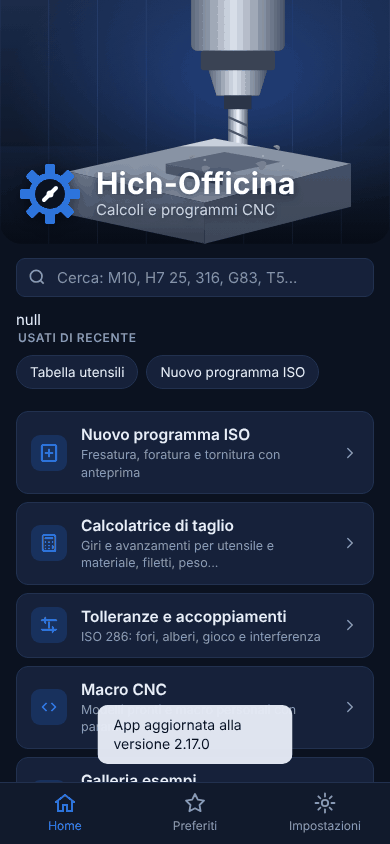
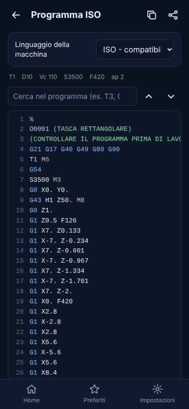

Hich-Officina
Calcoli di taglio, programmi ISO, macro, simulazione e controllo degli errori per fresatori e tornitori. Sul telefono, anche senza rete.
Cosa fa
Programmi di fresa, foratura e tornioSpianatura, tasche, profili con G41/G42, fori con tutti i cicli, filetti, troncatura, cicli fissi. Una sequenza di lavorazioni nell'ordine di officina.
Controllo e simulazioneTrova gli errori riga per riga, anche da una foto dello schermo. Simulazione animata con quote, giri, centro fresa e urti con le staffe.
Disegna il profilo col ditoLinee, archi, smussi, raggi, filetti e gole di scarico, con la vista 3D del pezzo tornito.
Ciclo di lavoro propostoDal pezzo (o dalle quote di un disegno) alla lavorazione completa, con utensili e dati di taglio.
Dati di taglio e tabelleGiri e avanzamenti per utensile e materiale, tolleranze ISO, filetti, rugosita, codici G e M.
Macro, pezzi, attrezzaggioModelli di macro con simulazione, fogli di attrezzaggio da stampare, foto e controllo delle misure.
Le schermate




Come si installa
- Dal browser del telefono: apri questo indirizzo, scegli "Installa app" (o "Aggiungi a schermata Home") dal menu. Dopo la prima apertura funziona anche senza rete.
- App Android (APK): scarica il file Hich-Officina.apk dal link che ti e stato dato, aprilo e consenti l'installazione da quella fonte. Aggiungi la lettura delle foto, l'invio del programma alla macchina e il salvataggio dei file.
- Gli aggiornamenti si installano sopra la versione vecchia: i dati restano. Prima di aggiornare fai la copia di sicurezza (Impostazioni).
Da sapere
I valori di taglio e i programmi sono di partenza e indicativi. Vanno sempre controllati e provati a vuoto prima di lavorare: la responsabilita di quello che si lavora e di chi usa il programma. Nessun linguaggio macchina e stato provato su una macchina vera.
I tuoi dati restano sul telefono: nessun account, nessun invio a server, nessun tracciamento.